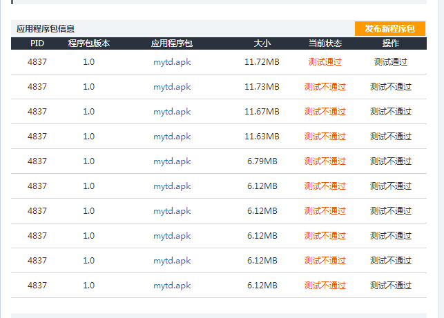
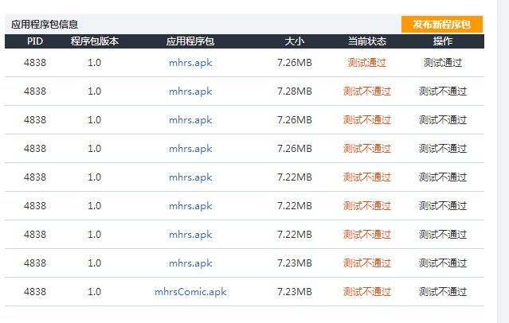
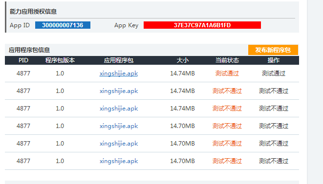

动漫几个App终于通过审核了
移动动漫基地的应用接入，今天终于审核通过了。
前期的应用开发虽然也遇到些问题，但每次修改都能修复掉。
后面老说我sdk集成的不对，修改了好几次都没通过。很奇怪的。
打了好几个电话，最后终于找到动漫的技术支持q群。然后才知道：
原来，原来，那官网上下载的sdk竟然是不对的！ 要用它这群里的sdk才行！！
简直真是气人，，动漫自己官网的sdk居然是错的，你妹的呀。
换了下sdk再提交，终于现在都测试通过了。
下面是三个App的提交修改过程：
前期的应用开发虽然也遇到些问题，但每次修改都能修复掉。
后面老说我sdk集成的不对，修改了好几次都没通过。很奇怪的。
打了好几个电话，最后终于找到动漫的技术支持q群。然后才知道：
原来，原来，那官网上下载的sdk竟然是不对的！ 要用它这群里的sdk才行！！
简直真是气人，，动漫自己官网的sdk居然是错的，你妹的呀。
换了下sdk再提交，终于现在都测试通过了。
下面是三个App的提交修改过程：
漫游天地

漫话人生

漫迷星世界
